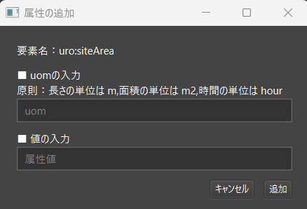

属性情報の編集
このページでは、地物の属性情報を編集する際の手順や方法を解説します。操作手順は、大きく以下の 2 つに分かれます。
- ツール上で直接編集
- CSV ファイルを出力・編集してインポート
いずれの方法でも、最終的に CityGML の属性情報へ反映されます。作業規模やワークフローに合わせて使いやすい方をお選びください。
1. ツール上で直接編集する方法
ヒエラルキー一覧または 3D ビュー上で対象の地物を選択すると、画面右（地物情報パネル）にその地物の情報が表示されます。
※複数の地物を一括選択している場合は、共通する属性のみが表示され、追加・編集・削除は選択中の全地物に同時適用されます。

上図の「属性情報パネル」から、属性の追加・削除・編集が可能です。
1-1. 個別編集
既存の属性を修正する際は、値欄をダブルクリックし、表示されたテキストフィールドで編集します。uom や codeSpace など、CityGML 特有の属性をまとめて編集したいときは、属性を右クリック → [編集] で専用の編集画面を開けます。
CodeType の編集
CodeType 型の属性を編集するときは、以下の画面が表示されます。
- 「一覧から選択」 を押して、一覧から CodeList の XML ファイルを指定する。

- 「値を選択」 を押して、候補から適切なコード値を選択。

- 「追加」 ボタンで編集内容を確定。
MeasureType の編集
MeasureType 型の属性編集画面では、uom と数値の入力欄があります。

uomと値を入力- 「追加」 ボタンを押して適用
これにより、bldg:measuredHeight などの情報を単位付きで管理できます。
1-2. 属性情報の追加
新規属性を追加する場合は、属性情報パネルの 「＋」ボタン を押し、以下のような画面を開きます。既存の親要素に追加する場合は、その親属性を右クリックして「追加」を選びます。

追加画面では、タグ名一覧が表示され、上部の検索パネルでフィルタリングが可能です。
属性をダブルクリックすると、必須入力項目や型別の編集画面が表示されます（個別編集の画面と同様）。親要素を追加する場合は、全ての必須属性について編集をおこないます。

入力を終えたら「追加」ボタンで確定し、属性が生成されます。
1-3. 属性情報の削除
削除したい属性を右クリックし、 「削除」 を選ぶと、その属性情報が地物から外れます。
2. CSV を用いて編集する方法
多数の地物の属性を一括編集・一括削除する場合や、Excel などで一括管理したい場合には、CSV エクスポート/インポートを活用します。
2-1. CSV のエクスポート
画面上部の 「CSV」ボタン → [エクスポート] を選択し、エクスポート画面を開きます。
- 出力先 を指定（デフォルトは CityGML ファイル直下の CSV フォルダ）
- 「エクスポート」 ボタンを押すと、地物全体の属性情報が CSV に出力されます。
2-2. エクスポートされた CSV の編集
エクスポート結果の CSV は、任意のテキストエディタや Excel で開いて編集できます。1 行が 1 地物、列が属性に対応します。
- 全ての地物に対して特定属性を削除したい場合は、該当する列を削除 or 2 行目以降を空白化
- 新たな属性を追加するには、列を新設したうえでヘッダを属性名に合わせる
CSV フォーマットのポイント
- gml:id をキーとした 1 地物 1 レコード
- 1 行目はヘッダ行、2 行目以降がデータ行
- 属性名が重複する場合は
_[連番]が付く（※連番は 1 から開始） - 階層構造や
uom/codeSpaceは 親名 +_+ 子名 で表現
例
| gml:id | bldg:measuredHeight | uro:buildingIDAttribute_uro:buildingID | uro:buildingDetailAttribute_1_uro:surveyYear | uro:buildingDetailAttribute_2_uro:districtsAndZonesType | bldg:measuredHeight_uom |
|---|---|---|---|---|---|
| bldg_18c5e09c-9118-4e63-b85e-389814 | 92.3 | 13104-bldg | 2016 | 10 | m |
| bldg_58a6e11b-7492-ac98-89b7-837487 | 45.7 | （空白） | 2020 | 10 | （空白） |
- uro:buildingDetailAttribute が 2 つあるため、 uro:buildingDetailAttribute_1,uro:buildingDetailAttribute_2 が存在
- uro:buildingIDAttribute_uro:buildingID は、uro:buildingIDAttribute を親とする uro:buildingID を表す属性カラム
- bldg:measuredHeight_uom は、measuredHeight の uom を設定するカラム
Warning
CSV 形式が破損すると、インポートエラーが発生する場合があります。ヘッダ行を大きく書き換える際は注意してください。
2-3. CSV のインポート
編集を終えたら、画面上部の 「CSV」ボタン → [インポート] を選択し、インポート画面を開きます。

- 編集後の CSV ファイル を指定
- 「インポート」 ボタンを押す
- 成功すると 「対象の CSV の読み込みが完了しました。」 と表示
- 不正な行や属性があればエラー文で通知
これにより、CSV 内で修正した内容が各地物に反映されます。大量の属性変更や削除がある場合に便利です。
3. まとめ
- 少量の属性編集や確認 → ツール上で直接編集が簡単
- 一括更新や外部ツール(Excel)での管理 → CSV を用いた編集が効率的
どちらの方法でも同じ CityGML 属性に反映されるため、使い分けて効率良く管理してください。